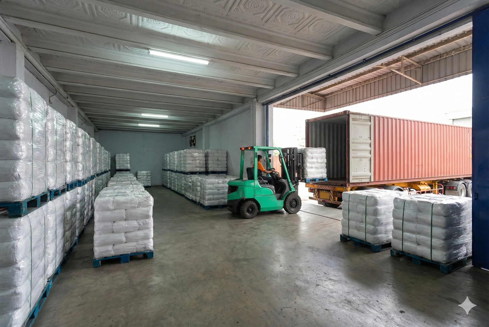
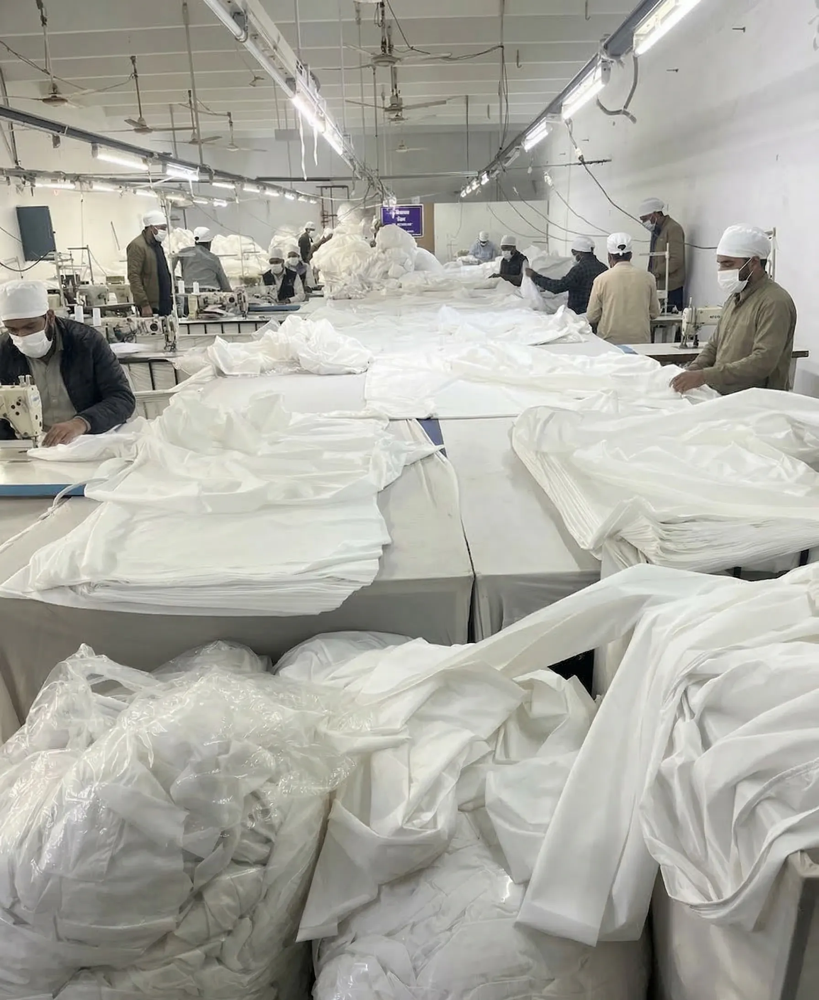

A 45-year legacy of quality manufacturing and global B2B export leadership.

M.A. & Company is a proudly family-owned business. Established over 45 years ago by our father, the (Late) Mehmood Ali Khan, we started with a singular vision to produce premium wiping rags. In the textile industry, our father was respectfully known as "Ustaad Mehmood"—the pioneer and teacher of this industry. Today, we honor his legacy as one of Pakistan's leading manufacturers and exporters of industrial wiping rags, home textiles, and towels, guaranteeing the highest quality for our global B2B partners.
We are a powerhouse in the textile manufacturing and recycling sector. By handling the complete refining process under our own roof, we bridge the gap between raw textile availability and finished industrial needs. We proudly manufacture and export high-volume, meticulously graded fabrics and wiping rags all over the world, with a specialized focus on serving B2B buyers in the USA and Canada.

At M.A. & Company, we are committed to the circular economy and sustainable manufacturing practices. By recycling textiles into industrial wipers, we significantly reduce waste. We continuously monitor our production processes to ensure compliance with environmental regulations and strive to minimize our ecological footprint through efficient, environmentally friendly usage of resources. After all, our planet is our shared responsibility.
Our journey began by supplying premium textiles domestically to local exporters. Building upon the foundational expertise of "Ustaad Mehmood," we eventually expanded to establish our own direct export division. Operating out of our extensive facility in SITE Phase-1, North Karachi, we maintain strict control over our quality standards. Every container shipped represents our 45-year promise of uncompromising excellence from our family to yours.
We handle the complexities of international shipping, customs, and documentation, ensuring your containers arrive on time, every time.
We handle the complete refining of rags in-house. Our multi-stage sorting, grading, and strict quality checks guarantee you receive exactly what you ordered—no fillers, no compromise.
We are committed to the circular economy. By recycling textiles into industrial wipers, we reduce waste and promote eco-friendly practices.